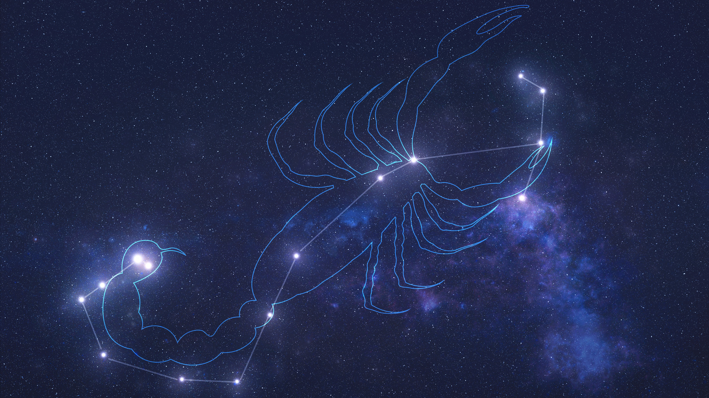

Scorpius is one of the most recognizable constellations in the night sky. It is associated with the mythological scorpion that killed the hunter Orion. The constellation lies in the southern hemisphere and is rich in deep sky objects. Scorpius is an important part of Greek mythology and has been identified since ancient times.
Located between the constellations of Libra and Sagittarius, Scorpius is the 33rd largest constellation and contains several bright stars and nebulae. Its brightest star, Antares, is often referred to as the heart of the scorpion, and it stands out due to its distinct red hue.
Scorpius is best seen from the southern hemisphere, although it can also be viewed from the northern hemisphere during the summer months. Look for the bright star Antares in the sky, which marks the heart of the scorpion.
The constellation is located near the Milky Way, so you’ll also find other stars and nebulae in the same area, making it a great spot for stargazing.